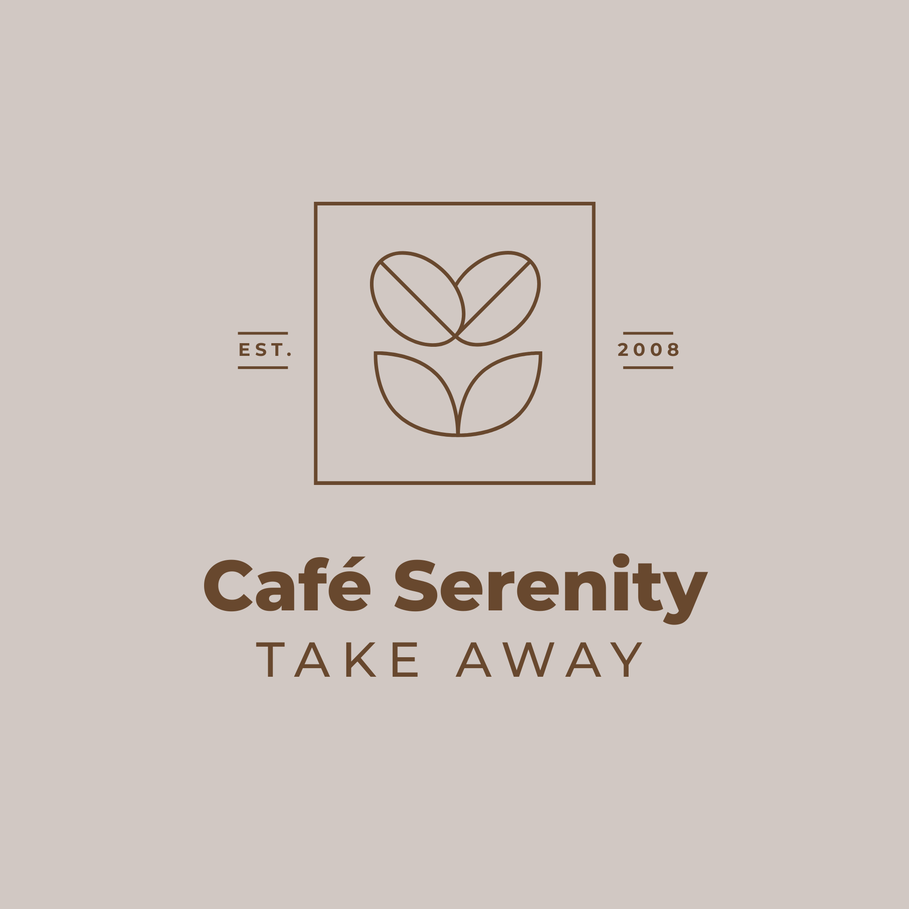

About Us :
Welcome to Café Serenity, an oasis nestled in the heart of Haven City. At Café Serenity, we strive to offer more than just exceptional coffee and delightful bites. Our cozy café is a haven where you can escape the urban rush and find a moment of peace.
Items we serve :


Discover Café Serenity :
Located in the heart of Haven City, Café Serenity beckons with its serene ambiance and inviting warmth. Step into a tranquil haven where the aroma of freshly brewed coffee and the soft hum of conversation create a comforting backdrop. Our café is a retreat from the bustling streets outside, offering a peaceful sanctuary where guests can unwind and recharge. Whether you're drawn to our meticulously crafted espresso drinks, soothing herbal teas, or delectable pastries, each offering is a testament to our commitment to quality and relaxation. Embrace a moment of serenity amidst cozy surroundings, where every visit promises a rejuvenating experience.
Location :

Visit Us Today :
Located at 123 Main Street, Haven City, we're open from 7:00 AM to 7:00 PM daily. Come experience a
blend of flavors and ambiance that make every visit memorable.
Contact Information:
Address: 123 Synthetic Street, Virtual City, Cyberland
Phone: +1 (123) 456-7890
Email: info@artificialcreations.com
We look forward to welcoming you!